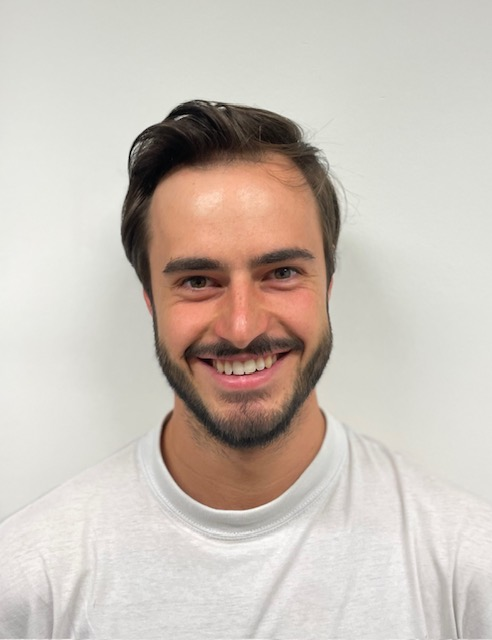
Théo LEMONNIER
I am a Master's student in Robotics at the École Polytechnique Fédérale de Lausanne (EPFL), with a minor in Data Science. I also hold a double degree from CentraleSupélec, University Paris-Saclay.
I am interested in leveraging recent advances in artificial intelligence to improve robotic perception and autonomy, enabling robots to better understand and interact with the world in challenging tasks.
GitHub / theo.lemonnier [at] epfl (dot) ch
Projects
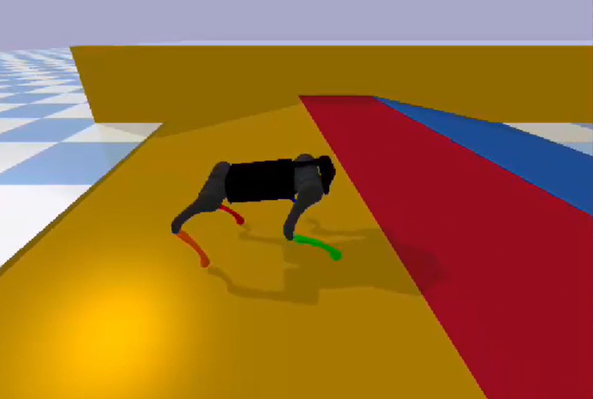
Quadruped Locomotion Programming
Leveraged deep reinforcement learning to achieve stable slope-crossing behavior on a Unitree A1 robot.
Used Gym interface
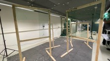
Aerial Drone race
Designed a minimum-jerk trajectory planner enabling fast autonomous drone flight through wooden doors using waypoint-based polynomial optimization.
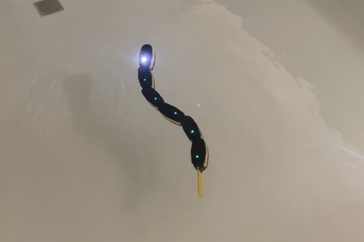
Program and Test a Lamprey Robot
Programmed and controlled modular aquatic robots, implementing trajectory generation, motor control, wireless communication, and motion tracking to study swimming locomotion.
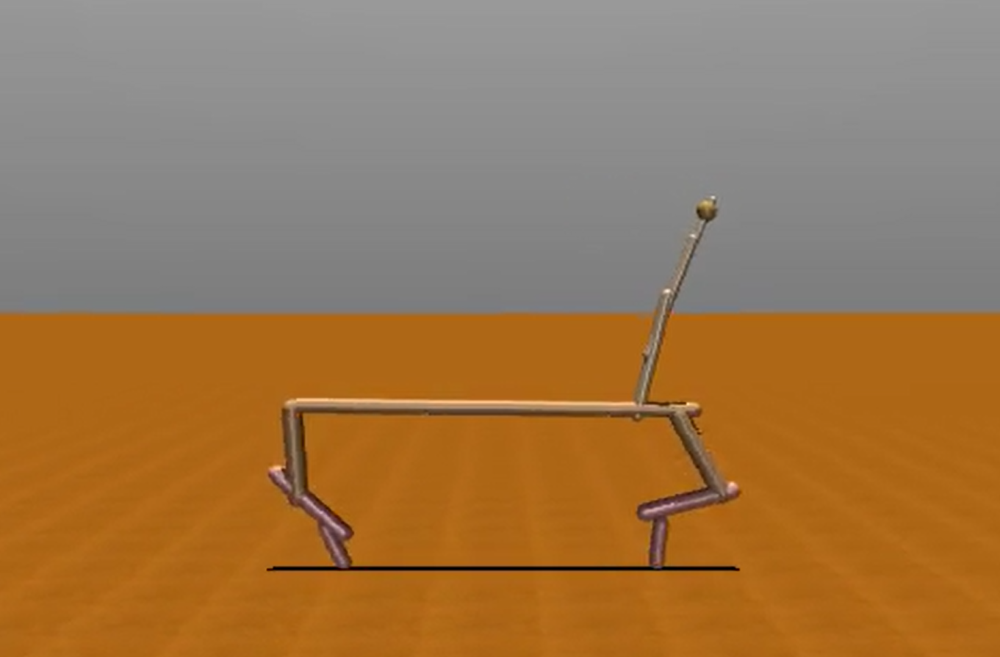
Learning to Walk with Genetic Algorithms: A Giraffe-Like Robot
Implemented a genetic algorithm to evolve locomotion controllers for a giraffe-inspired quadruped robot, comparing the performance of active and passive neck configurations.
Used MuJoCo simulator.
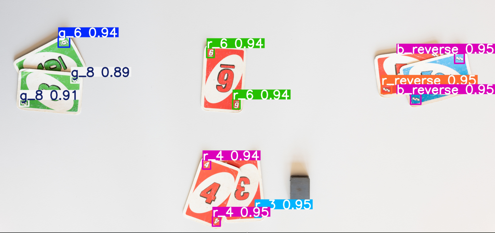
Uno Card Game State Recognition
Developed a computer vision pipeline for UNO game state recognition, including data annotation, augmentation, synthetic example generation, and image transformations to improve model robustness.
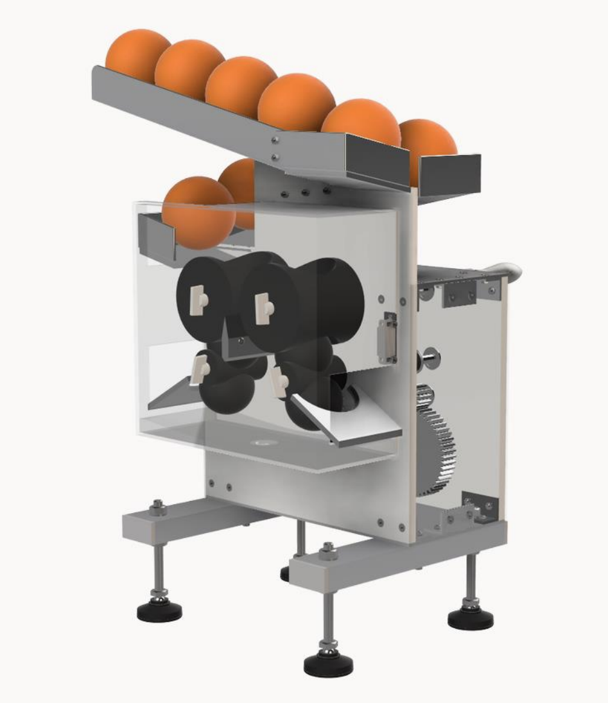
Orange Juice Machine
Designed a 3D orange press using CatiaV5
Experience
CortAIx Lab @ Thales Group
- Currently working on novel Vision-Language-Action (VLA) models for robots navigation using only visual observations and task decription.
- Created a data collection pipeline to generate training datasets.
- Used Docker to parallelize data collection and model training sessions.
- Used ROS 2 and Gazebo to develop and demonstrate robotic simulation environments.
Visual Intelligence for Transportation Lab @ EPFL
- Implementation and adaptation of an AFLink module for efficient Multi-Object Tracking.
- Extraction of Multi-modal trajectory data.
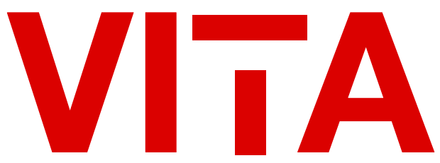
Laboratory of Intelligent Systems @ EPFL
- Predicting inertia effects for avian-inspired drones.
- Used Motive Software and OptiTrack cameras .
- Used ROS1.
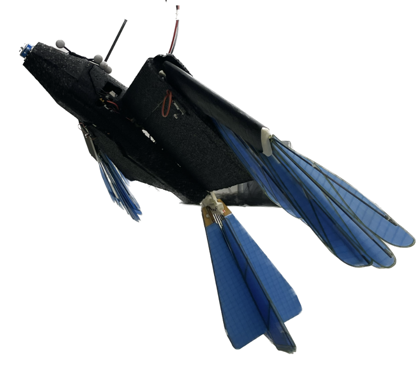
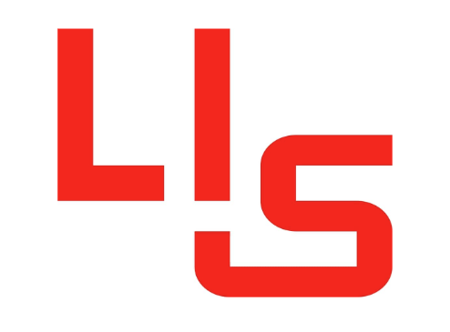
Leadership Activities
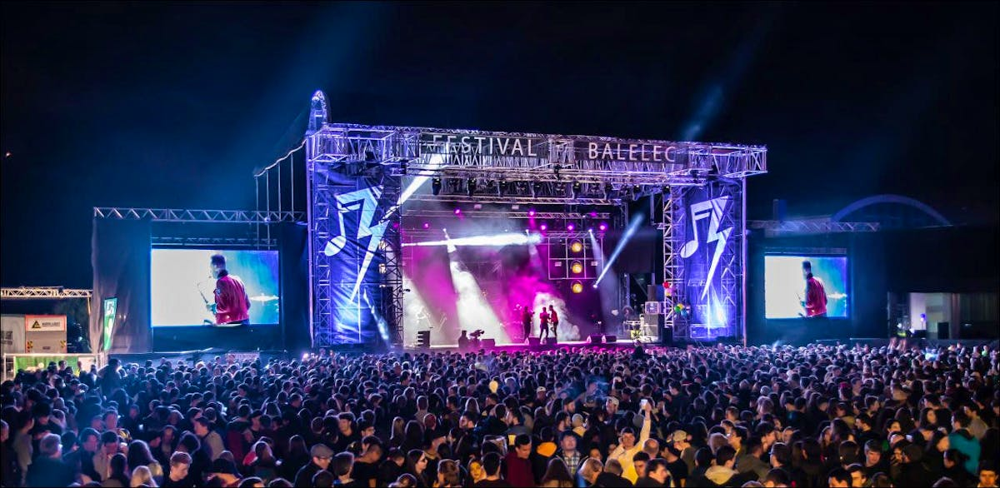
Balelec Festival Committee
In charge of audiovisual production and coordination with technical partners for Europe's largest student-organized music festival.
SBCS Visual Design Lead
Managed sound and lighting systems for student events and concerts, supporting event setup, live operation, and technical logistics with up to 4,500 attendees
Education
École Polytechnique Fédérale de Lausanne (EPFL)
Master of Science in Robotics (2024 – Present)
Minor in Data Science. Coursework included aerial robotics, legged robots, foundation models and generative AI, optimizationa and control
Bachelor of Science in Mechanical Engineering (2019 – 2022)
Coursework included mechanics, system dynamics, mathematics, thermodynamics, and engineering design.
CentraleSupélec
Diplôme d'Ingénieur (2022 – 2024)
Double-degree program focused on applied mathematics, optimization, statistics, computer science and general engineering.